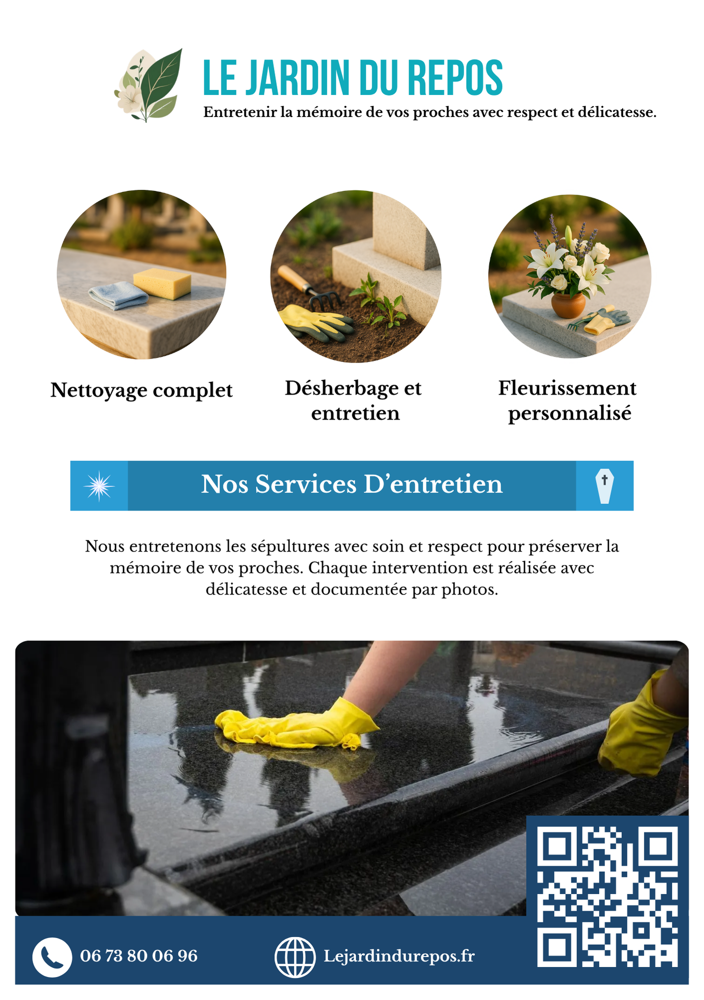
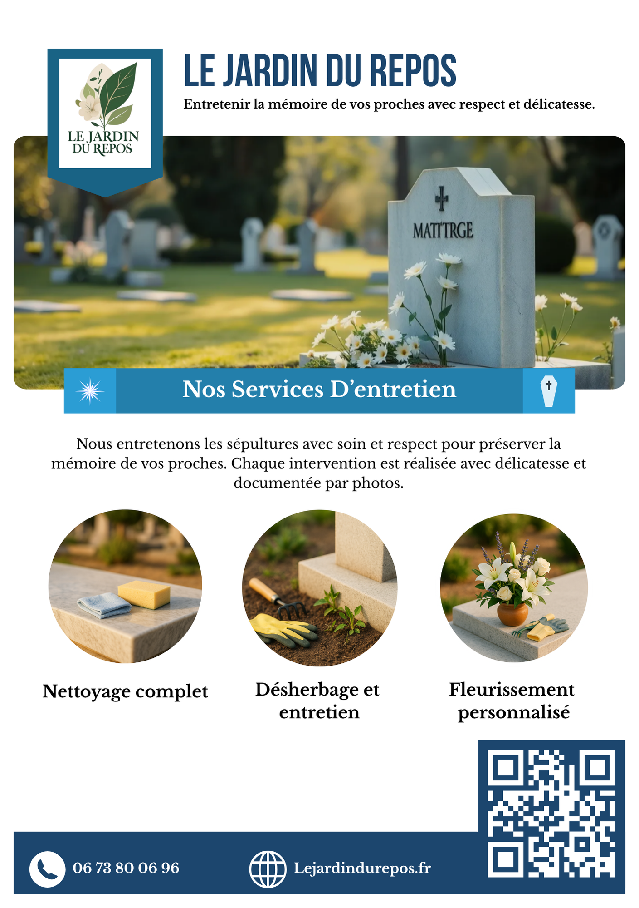

5
Formules créées
De l’entretien ponctuel au suivi mensuel personnalisé toute l’année.
Portfolio & blog
Co-créé à deux, Le Jardin du Repos est un service dédié à l’entretien, au nettoyage et au fleurissement de sépultures sur la zone Marseille / Aix / Martigues — un projet entrepreneurial mené de A à Z, de l’idée au premier client signé.
Le Jardin du Repos est né d’un constat simple : beaucoup de familles ne peuvent pas toujours se déplacer pour entretenir les tombes de leurs proches — distance, âge, mobilité réduite. Il manquait un service de proximité, sérieux et rassurant, capable de répondre à ce besoin de manière professionnelle et humaine.
Projet co-fondé à deux — chacun a créé sa propre auto-entreprise pour opérer en toute légalité. De mon côté, j’ai pris en charge la stratégie et le marketing : benchmark de la concurrence locale, construction de l’offre et de la grille tarifaire, création de l’identité visuelle, lancement du site et déploiement des premières actions de communication — jusqu’au premier client signé.
5
Formules créées
De l’entretien ponctuel au suivi mensuel personnalisé toute l’année.
3
Zones d’intervention
Marseille, Aix-en-Provence et Martigues — zone PACA.
1er
Client signé
Première facture émise dès le lancement du service.
Définition du service et de ses cinq formules — de l’entretien simple (nettoyage, désherbage) à la formule premium (passage mensuel, photo avant/après, fleurissement) — avec identification des profils clients : familles éloignées, personnes âgées, et parrainage de tombes.

Création du nom et conception personnelle du logo et de la charte graphique, pensés pour inspirer confiance à un public sensible. Construction d’une grille tarifaire structurée en cinq niveaux : « Essentielle » (1 passage/an) jusqu’à « Éternelle » (12 passages/an — 70–85 €/mois).
Conception et impression de 2 000 flyers format A5 — support commercial distribué localement pour ancrer la marque et générer les premiers contacts terrain.

Co-conception et mise en ligne du site avec une structure orientée conversion : présentation du service, détail des formules, zone d’intervention et formulaire de contact. Un site pensé pour rassurer et convaincre un public qui engage une relation de confiance durable.
Voir le site →
J’ai également conçu et codé un simulateur de prix intégré au site internet. L’objectif était de permettre aux visiteurs d’obtenir rapidement une estimation claire selon la formule choisie, le nombre de passages, les forfaits, les options et les éventuelles remises.
Cette fonctionnalité m’a permis de travailler à la fois la logique commerciale et la logique technique : structurer les offres, traduire la grille tarifaire en calculs simples, rendre l’outil compréhensible pour l’utilisateur et renforcer la capacité du site à transformer une visite en demande de contact.

Gestion complète du premier client en autonomie totale — de la prise de contact et du devis jusqu’à l’intervention sur le terrain. Service client à distance, coordination logistique et travail physique directement sur la sépulture : une première expérience de bout en bout, du commercial au terrain. Après l’intervention, j’ai également réalisé des preuves photo du travail fini afin de rassurer le client et de montrer concrètement le résultat obtenu.
Transformer une observation du quotidien en projet structuré et viable.
Créer une identité adaptée à un public sensible et à un secteur spécifique.
Concevoir un site de A à Z et coder un simulateur de prix orienté conversion.
Déployer les premières actions pour rendre un service visible et crédible.
Lancer un service dans un secteur aussi sensible que le funéraire, c’est comprendre que le marketing ne peut pas fonctionner sans la confiance. Chaque décision — le nom, le logo, les mots choisis sur le site — devait rassurer avant de convaincre. Ce projet m’a appris à penser « utilisateur » avant « produit ».
C’est aussi la première fois que j’ai structuré une offre tarifaire complète de zéro : benchmark des concurrents, identification des niveaux de service, nommage des formules, pricing. Un exercice concret de stratégie commerciale appliquée à un marché réel.
Et surtout : signer un premier client et intervenir soi-même sur le terrain, c’est une validation que rien d’autre ne remplace. J’ai géré ce client seul, de la première prise de contact jusqu’au travail physique sur la sépulture — relation client, logistique, exécution. Quand on vend un service, on comprend vraiment ce qu’on vend seulement quand on l’a délivré soi-même.